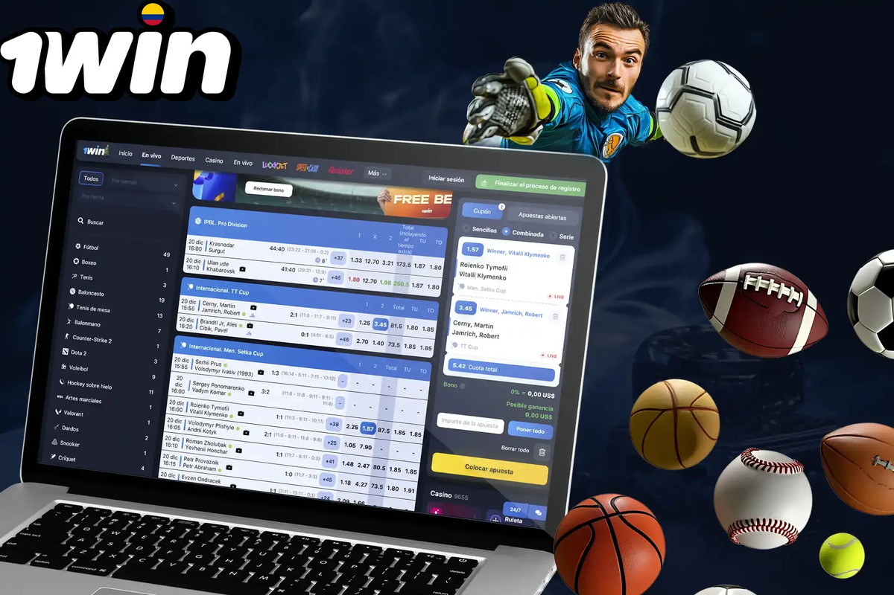

How a bonus code 1win offer usually works
A bonus code 1win field may appear at registration or inside the promotions locker. Codes can unlock deposit matches, free spins, or other credits — always subject to operator T&Cs. If no code field shows, the welcome package might apply automatically for your region.
Ready to explore bonus code 1win on the official operator site? Review the live offer details before you deposit.
18+ only. Bonus wagering requirements, minimum deposit amounts, offer expiry windows, and game contribution rates vary — see operator T&Cs on the signup page before claiming any promotion. Gambling involves risk; never stake more than you can afford to lose.
Wagering, expiry, and minimum deposits

Wagering multiplies how much you must stake before withdrawal. Expiry clocks can be short. Minimum deposits gate eligibility. Game contribution decides whether a roulette spin counts the same as a slot spin — usually it does not.
| Term | Meaning | Player action |
|---|---|---|
| Wagering | Turnover required on bonus funds | Calculate real stake volume |
| Min deposit | Cash in needed to unlock | Do not under-deposit |
| Expiry | Time limit to finish rules | Set calendar reminders |
| Contribution | Percent each game counts | Prefer eligible titles |
- See operator T&Cs for the live wagering multiplier.
- See operator T&Cs for minimum deposit thresholds.
- See operator T&Cs for expiry and country eligibility.
- See operator T&Cs for game contribution percentages.
Welcome package anatomy
- Read whether the match applies to the first deposit only or a multi-step ladder.
- Check max bonus caps — large deposits may not receive infinite match funds.
- Note excluded payment methods that void the code.
- Confirm whether winnings from spins have separate caps.
Cashback and ongoing promos
Cashback styles differ: some return a percentage of net losses as bonus money with fresh wagering. That is not the same as withdrawing cash immediately. Stacking a bonus code 1win welcome offer with cashback may be restricted.
| Type | Usually withdrawable immediately? | Common catch |
|---|---|---|
| Deposit match bonus | No — after wagering | High multiplier |
| Free spins | Often capped | Low-value spin stake |
| Cashback credit | Sometimes still bonus funds | New playthrough |
| Reload code | Depends | One-account rules |
Worked reasoning without invented percentages
Because live bonus code 1win figures change, we refuse to invent multipliers here. Instead, practise a reasoning template. Write down deposit D, match percent P, cap C, wagering W, and eligible contribution E for the games you actually like. The turnover estimate is a function of those inputs, not of social media screenshots. If you cannot fill every variable from the official T&Cs, you are not ready to opt in.
People underestimate how excluded games quietly extend playthrough. A night spent on low-contribution tables can burn days off an expiry clock with little progress. Set a calendar alert halfway through the offer window to reassess whether completion is realistic without raising stakes.
Reload codes sometimes conflict with open welcome balances. Operators commonly allow one primary bonus pathway at a time. Attempting to stack creatively can void funds. When in doubt, ask official chat to confirm whether claiming a new code forfeits current progress — and save that transcript.
Free-spin fair values depend on the spin stake and the game RTP, neither of which is improved by urgency banners. If spins must be used on a volatile title you dislike, calculate whether the entertainment is worth the time. Declining is allowed.
Cashback presented as ‘always on’ still needs reading. Is the return paid as cash or bonus money? Is there a minimum activity? Does it apply to sports, casino, or both? Ambiguity benefits the house marketing team, not your spreadsheet.
Affiliate sites including ours may highlight that offers exist. That is not a personalised promise that a code will unlock in your province on a given day. Geo rules, duplicate account checks, and payment method exclusions all intervene. Treat the cashier as source of truth.
Behavioural traps around promotions
Expiry countdowns create artificial urgency. If meeting a timer requires staking beyond your weekly envelope, the bonus is not a gift — it is a costly obligation. Walk away. Similarly, ‘last chance’ banners recycle more often than true scarcity would suggest.
Discuss promotions with a trusted adult friend if you feel secrecy creeping in. Hiding bonus grinding is a warning sign on our responsible gambling checklist.
Extended notes for bonus readers
Additional context for the bonus guide: adults reading from Argentina benefit from slow decision-making, written budgets, and a refusal to treat marketing banners as advice. Take ten quiet minutes before any deposit to list why you are opening the cashier at all.
Keep a simple ledger for a fortnight. Write dates, amounts, and product types. Patterns appear quickly — late-night crash games, salary-day spikes, or live football overreactions. Once visible, patterns are easier to change with deposit caps and app timers.
If a session stops being fun, end it without negotiating with yourself. Entertainment that requires a pep talk to continue is no longer entertainment. Use the responsible gambling block links when unease turns into distress.
Cross-read related hub pages instead of searching random screenshots. Internal articles on casino, app, login, bonuses, Aviator, Argentina context, and legality exist to answer different questions without repeating the same paragraph everywhere.
Finally, remember affiliate disclosures: sponsored links may earn this site a commission. That commercial fact does not change maths, law, or your household budget. Your constraints stay yours.
Revisit these reminders monthly. Habits drift. A calendar note labelled ‘budget review’ is a small tool with outsized value for anyone who wants play to remain optional and calm.
Practical checklist readers can save
Save this checklist somewhere offline: confirm official domain, set a deposit ceiling, enable stronger authentication where available, read wagering contribution rules before claiming promotions, and schedule a hard stop time. Tape the stop time next to your monitor if needed.
When travelling between provinces or abroad, re-check whether access rules and payment rails still match your expectations. Do not assume yesterday’s cashier equals today’s. Screenshots age poorly.
Talk about money stress early. Friends, family, or free support organisations can interrupt spirals that private shame extends. Seeking help is a strength move, not a spectacle.
Keep software updated on phones and laptops. Many account takeovers start with outdated browsers or malicious lookalike apps rather than clever password guesses alone.
Use separate browser profiles for everyday browsing and for any gambling logins if that mental separation helps you notice when you are about to break a limit.
Review open bets and unfinished bonus trackers before bed. Unfinished mental loops cause night-time checking. Closing loops deliberately protects sleep.
If you disagree with a settlement, gather evidence calmly and contact official support with timestamps. Parallel raging on social networks rarely improves outcomes and sometimes spreads personal data you meant to keep private.
Responsible use of promotions
Promotions can encourage longer sessions than you planned. Decide your deposit before entering a code. If completing wagering would require staking past your comfort zone, decline the offer — unused bonuses are better than stressful play.
- Link out to casino weighting notes before grinding slots solely for wagering.
- Sports contribution rules may demand minimum odds — read carefully.
- Keep an eye on safer gambling tools.
- Affiliate pages including ours may earn commission when you register via sponsored links.
- Screenshot the T&Cs version timestamp when you opt in.
- Track turnover in a simple note file.
- Stop if frustration rises — bonuses are optional.
- Verify account details early so cleared funds are not delayed.
| Item | Example figure | Comment |
|---|---|---|
| Deposit | Display only — check live | Do not invent eligibility |
| Match percent | See operator T&Cs | Caps apply |
| Wagering | See operator T&Cs | Multiply carefully |
| Time limit | See operator T&Cs | Missed expiry voids progress |
We intentionally avoid fabricating code strings that may be expired or geo-blocked. If a code fails, the cashier message is authoritative — not a social media screenshot.
18+. This site publishes informational content for adults only. Gambling can be addictive — set limits, take breaks, and seek help if play stops being fun.
- Support and education: BeGambleAware
- Advice and treatment pathways: GamCare
If you feel play is becoming stressful, pause and contact free support resources. Nothing on this page is financial advice.